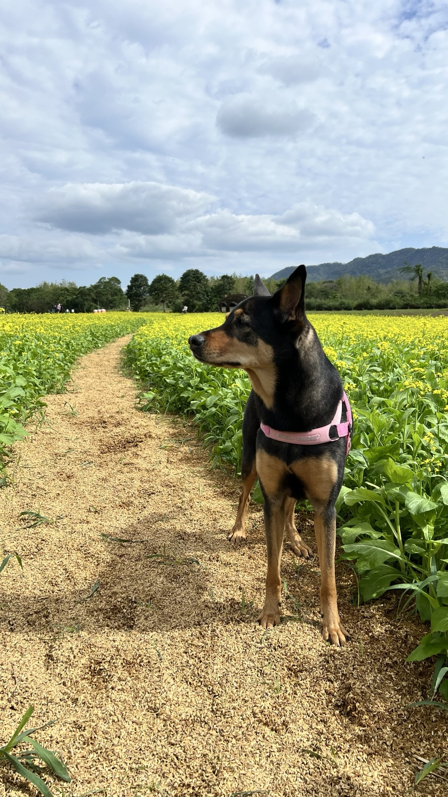
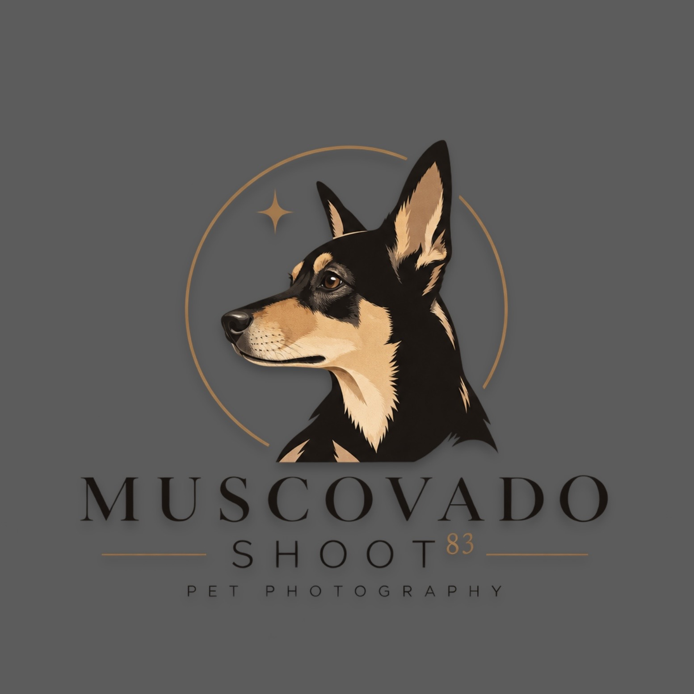

EDITORIAL PHOTOGRAPHY
MUSCOVADO
SHOOT83
Every shoot,
a story worth keeping.

黑糖 MS83PORTRAIT · LANDSCAPE · COMPANION · TAIWAN
01 / ABOUT
從陪伴開始。
向每個畫面延伸。
Muscovado Shoot83 從一支手機、一隻狗開始。
我最初用拍攝人物與時裝的方式，看待每天陪伴我們的寵物；後來也把相同的目光，留給人、風景與途中遇見的片刻。
題材可以改變，觀看的方法不變。光線、姿態、距離，以及那些沒有被安排的瞬間，都可以成為一張值得留下的照片。
02 / THE 83 RULE
只留下
值得留下的。
83 來自 1983，也是這個攝影網站的策展規則。
網站永遠只保留最新的 83 張作品。
當第 84 張照片出現，最早的一張就離開。
這不是為了累積更多照片，而是提醒自己慎選每一張值得留下的作品。
CURATED, NOT ACCUMULATED.